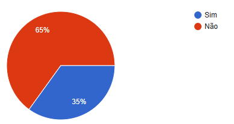
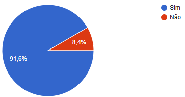
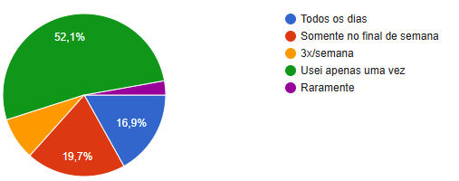
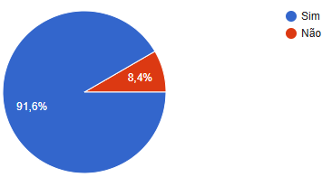

Dados Coletados
Foi aplicado um formulario em todas as turmas do curso técnico integrado ao Ensino Médio, e obtivemos 204 respostas.
Este formulario foi construido pela Fernanda Dal Masso Camera, em conjunto com o grupo e o orientador do grupo.
- Você já usou Cigarro Eletrônico? 
- Você conhece os efeitos do Cigarro Eletrônico na saúde? 
- Qual a frequência de uso? 
- Você conhece os efeitos do Cigarro Eletrônico na saúde? 